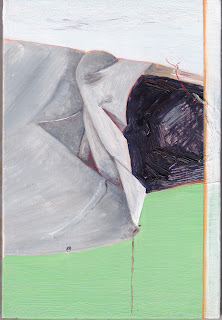
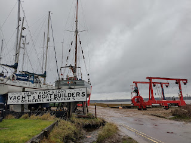
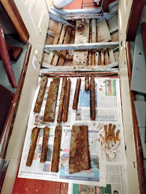

 |
| Peter Duck in winter acrylic on board by Anna Mortimer |
{kind=link}
My human hands do shockingly little these days, except tap on a keyboard, turn a page or stroke a dog. Apart from this month, when it’s the annual fitting-out season on Peter Duck. When I made my first brief foray to the Woodbridge Boatyard last week, it was mainly to write lists. PD was looking grubby and depressed. I needed to do something to cheer her up. There’s a varnished rim around the coach roof that was looking particularly uncared for. I didn't have my extension lead and electric sander from last year, so I found a shave hook and some sandpaper and set to work by hand.
It was a slow job. After a while I started to puff a bit; my
fingers stiffened and the muscles in my upper arm began to ache. I enjoyed the slight
warmth generated by the friction between the rough paper and the wood and the
indescribably different sensations that came when I was rubbing with or against
the grain. I wouldn’t have got either of those feelings with my Black &
Decker, though I’d have covered a much greater area in the time. It was a small, unimportant job -- but very satisfying.
For a desk-worker, like me, the fitting out season is exhausting. My family will tell you how bad-tempered I am when I come home dirty and tired after a day spent exercising unfamiliar muscles and contorting myself into awkward positions. I wouldn’t willingly miss it however. There's the camaraderie of the boatyard as we creep out from under our tarpaulins and dare to think of spring. Although I only do the most menial tasks (and don’t do them very well) it’s also the time I feel closest to Peter Duck’s fabric and experience most admiration for the people who built her.
PD is absolutely the work of human hands. When she was being built in Suffolk in 1945-1946, access to electricity was by no means universal in boat-building yards. There was none at Harry King’s yard in Pin Mill. Every inch of sawing and planning, chiselling and sanding, riveting and caulking had direct human effort behind it. There were no power tools. There was no crane, no yard tractor, no metal boat cradles. Components such as PD's 3 ½ ton cast iron keel had to be manoeuvred into position beneath her using levers, rollers, ad hoc pulley systems and as many hands as could be found. When all 8 tons of completed yacht left the shed to make the ¼ mile migration to the river, greased logs, a makeshift cradle and a hand-cranked windlass were the only additional props to raw human effort.
 |
| Harry King's yard by the River Orwell There were no travel hoists in 1946 |
{kind=link}
I, too, wish he’d taken more photos of those people. Some of them will have been the same workers and the craftsmen who built Peter Duck. But if a customer with a camera wasn’t there, no one thought to photograph, or to describe, what were the normal, taken-for-granted, activities of a boatyard then. Harry King, the small, wiry, much-respected owner worked long hours with his two sons and didn’t spend much time at his desk. Sarah Curtis, manager of the yard today -- and its historian -- has spent a considerable amount of time collating what paperwork there is and listening to the last members of that hard-working generation. Kings of Pin Mill, her forthcoming history of the yard will tell a human story as well as the development of a business.
I wish I knew what the men who
built Peter Duck were paid, for their muscle-straining labour. I haven’t
yet asked Sarah that question and it’s probably one she may find difficult to
answer for each individual. Norman King, Harry’s older son, would bicycle the 7
miles to Ipswich each week to collect the yard wages – no one had a car – and
would often bring back sweets for the children. But these were still rationed
in 1945-46. How much did the workers get? Evidently not enough, says Sarah, as too
many of them eventually left for the building trade.
An agricultural worker in late 1945-
early 1946 might have been expected to work from 48 to 51 hours in
winter and been paid a minimum rate of 70/-. Did workers in a small, family-run
boatyard earn more or less? I think I must accept that the people whose sweat
and muscle turned my lovely boat from a set of lines on a naval architect’s
drawing board, to a robust and treasurable family yacht, received very little
for their handiwork. It's not a comfortable realisation.
Whether the boatyard itself broke even, I don’t know. Sarah
Curtis reveals that they often didn’t. I’ve just been re-reading A Taste for
Sailing by John Lewis which details the building -- at Wivenhoe -- of a charming wooden gaff
cutter, Patient Griselda, designed by my uncle Jack Jones with John
Lewis, her first owner. Lewis records a somewhat tetchy exchange with Guy
Harding, the boatyard owner about costs:
‘I’ve told you what I can pay for this boat and that’s all I can pay!’
{kind=link}
‘Who is asking you to pay any more?’ he replied somewhat
hotly, ‘all I’m telling you is that it’s costing me more!’ P185
John Lewis remembers that he stomped off in something of a huff, grumbling to himself about the untidiness of the yard and the fact there were always dirty dishes in the ink, the quayside needed dredging and the yard boat should have been pumped. Then 'reason returned' to him and he looked at the quality of their workmanship. 'I wandered back into the yard, past the pretty little racing sloop and up to my boat. I put my hand on her warm pitch pine planks and looked at her massive stem. She was beautifully planked. Pride of possession swept over me. I began to love her. '
I also remember Patient
Griselda with affection, She was ‘a bonny little boat’ and lived on
the River Deben for many years. Now I hear she is for sale by The Dart Harbour
Authorities for £200 'due to non-payment of fees'. That price means they are
trying to get rid of her to avoid the greater cost of breaking her up and send
her to landfill. https://www.dartharbour.org/about-dart-harbour/dart-harbour-staff/staff/patient-griselda/ I hope someone decides to take her on.
Now, I’d better lift my fingers from the keyboard and go and find the extension lead and check that I’ve sufficient sander pads to avoid PD falling into such a sad state.
 |
| Fitting out is not all tasteful varnish work. Today I was cleaning rusty ballast. I've not yet discovered a machine to take that job off my hands |
{kind=link}